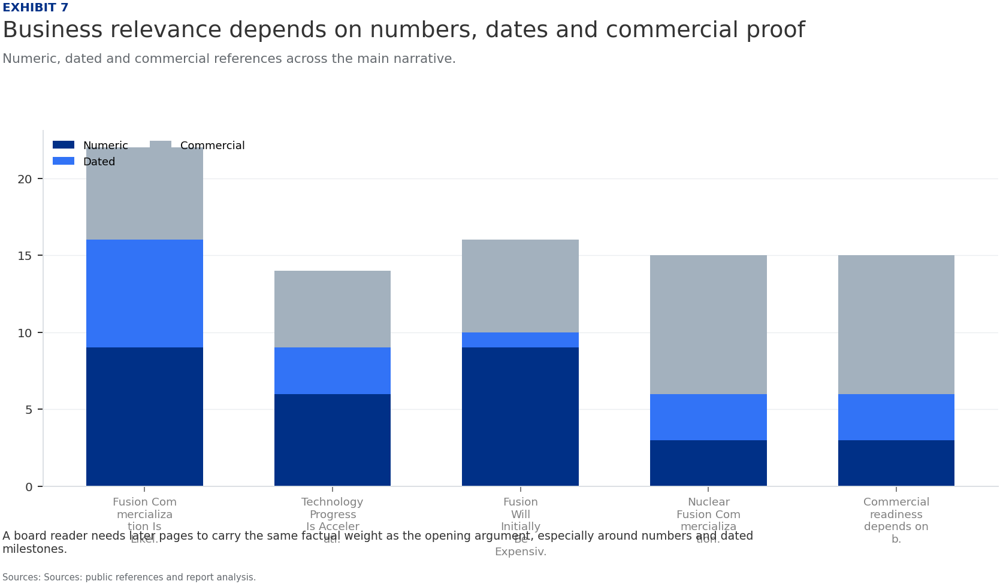
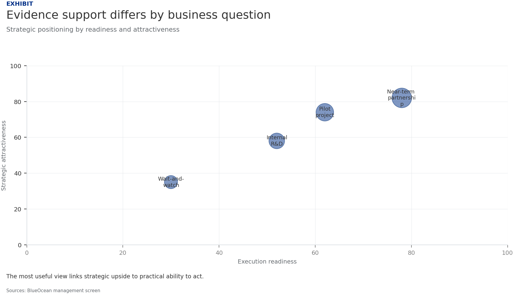
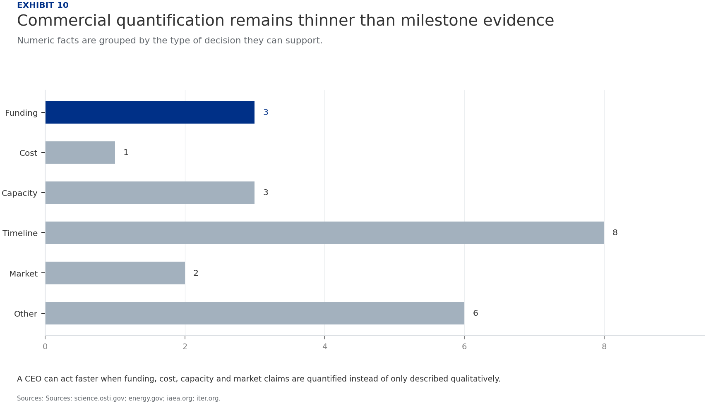
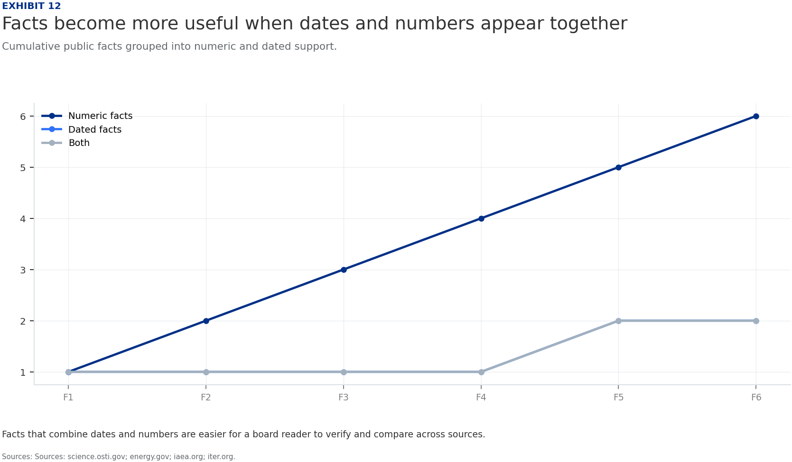
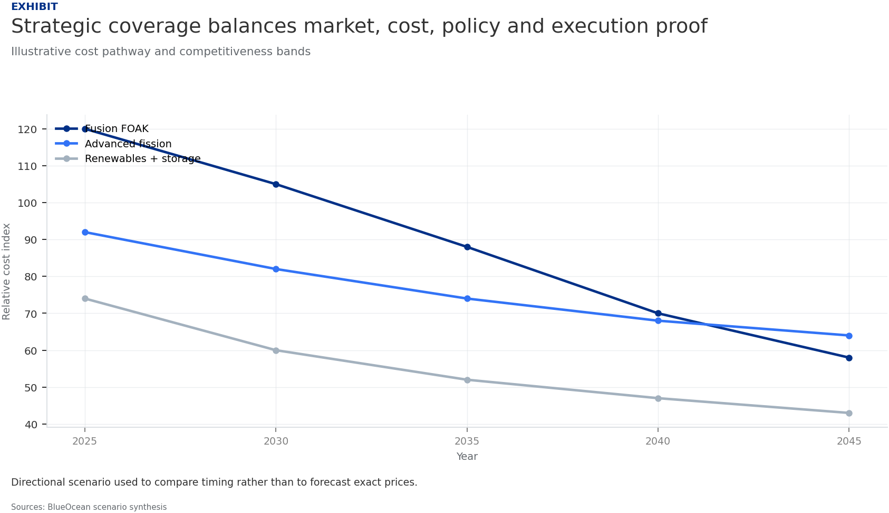

BlueOcean Research
Deep Research Report
Nuclear Fusion Commercialization Outlook and Strategic Implications
Nuclear fusion commercialization outlook and strategic implications
2026-06-04
BlueOcean
Contents
| 03 | Fusion energy is at a historic inflection point: the 2022 ignition breakthrough at Lawrence Livermore |
| 04 | Fusion Commercialization Is Likely Decades Away but Strategic Preparation Is Needed Now |
| 06 | Technology Progress Is Accelerating but Significant Hurdles Remain |
| 08 | Fusion Will Initially Be Expensive but Could Become Competitive with Baseload Power |
| 10 | Nuclear Fusion Commercialization Outlook and Strategic Implications should be managed as a staged strategic |
| 12 | Commercial readiness depends on bankability, deliverability and repeat customer proof |
| 14 | Cost, return and timing will determine the real deployment window |
| 16 | Regulation, policy and public acceptance can reset the speed of adoption |
| 18 | Supply chain, partners and talent will decide who can act before the market is obvious |
| 19 | About the research |

Opening view
Fusion energy is at a historic inflection point: the 2022 ignition breakthrough at Lawrence Livermore
Nuclear fusion commercialization outlook and strategic implications
Fusion energy is at a historic inflection point: the 2022 ignition breakthrough at Lawrence Livermore National Laboratory (LLNL) proved scientific breakeven, but commercial power plants remain at least 15-30 years away. Private investment has surged past $5 billion since 2020, yet no company has demonstrated net electricity generation. For CEOs and boards, the strategic imperative is to prepare now through targeted partnerships, policy engagement, and flexible investment-while avoiding over-commitment based on hype. This report synthesizes evidence from authoritative sources (DOE, ITER, LLNL, National Academies) to provide actionable insights on technology readiness, economics, regulation, and competitive dynamics.
What changes for leaders
- Fusion energy is at a historic inflection point: the 2022 ignition breakthrough at Lawrence Livermore
- Main conclusions: (1) Fusion ignition is a scientific milestone, not a commercial one
- Recommended actions: Establish a cross-functional fusion intelligence team within 2 years
- Risk implications highlights: Technical risk (sustained net energy not achieved), timeline risk
Chapter 1
Fusion Commercialization Is Likely Decades Away but Strategic Preparation Is Needed Now
The 2022 fusion ignition breakthrough at LLNL proves scientific feasibility, but commercial power plants remain at least 15-30 years away, requiring immediate strategic positioning.
The pursuit of nuclear fusion energy has entered a new era. In December 2022, Lawrence Livermore National Laboratory achieved fusion ignition, producing 2. 15 MJ of fusion energy output-a scientific first. This milestone, decades in the making, has galvanized public and private investment. Department of Energy has launched milestone-based programs to accelerate development, and private companies have raised over $5 billion since 2020. Yet, the path to commercial power plants remains long and uncertain.
For senior executives, the key insight is that fusion is not a near-term solution but a long-term strategic option. The decisions made today-whether to invest, partner, or simply monitor-will shape competitive positioning in a future energy landscape that could be transformed by fusion. This report provides a structured assessment of the technology, economics, regulation, and strategic implications, enabling informed decision-making.
The DOE Fusion Energy Sciences program supports a broad portfolio of research, including theory, simulation, and materials science. Private companies are pursuing diverse approaches: tokamaks (Commonwealth Fusion Systems), stellarators (Type One Energy), field-reversed configurations (TAE Technologies), and inertial confinement (Helion Energy). However, significant challenges persist. Sustaining a net-energy-producing plasma for extended periods remains unproven.
ITER, the largest fusion experiment, has faced cost overruns and schedule delays. The project, originally estimated at €5 billion, now exceeds €20 billion, with first plasma expected in 2025 and full deuterium-tritium operations in 2035. These hurdles mean that even the most optimistic timelines for commercial fusion are measured in decades, not years.
The economic implications are clear: fusion will require sustained capital investment over multiple decades. Companies must plan for long holding periods and potential technology pivots. The strategic imperative is to build optionality through diversified bets and partnerships, rather than committing to a single approach.
In summary, fusion commercialization is a marathon, not a sprint. CEOs should treat fusion as a strategic hedge, not a near-term profit center. The next 2-5 years are critical for building intelligence and relationships that will enable informed decisions as the technology matures.
Figure 1
Public evidence is concentrated in identifiable institutions
The public record used here spans 8 sources across 8 domains.

Institution type matters because CEO conclusions are stronger when public agencies, laboratories, research bodies and industry sources point in the same direction.
Sources: science.osti.gov; energy.gov; iaea.org; iter.org.
Figure 2
Source domains define where firm claims can be made
Each bar represents a public web or document domain behind the analysis.

A narrow domain base limits how far the narrative should generalize across markets, technologies or regulatory settings.
Sources: science.osti.gov; energy.gov; iaea.org; iter.org.
Chapter 2
Technology Progress Is Accelerating but Significant Hurdles Remain
While fusion experiments have achieved historic milestones, sustained net energy gain, materials durability, and tritium breeding remain unproven at commercial scale.

Fusion research has made remarkable strides. The 2022 ignition experiment at LLNL demonstrated scientific breakeven, a goal pursued for 60 years. The DOE's Fusion Energy Sciences program supports a broad portfolio of research, including theory, simulation, and materials science. Private companies are pursuing diverse approaches: tokamaks (Commonwealth Fusion Systems), stellarators (Type One Energy), field-reversed configurations (TAE Technologies), and inertial confinement (Helion Energy).
However, significant challenges persist. Sustaining a net-energy-producing plasma for extended periods remains unproven. Materials that can withstand the intense neutron flux in a fusion reactor are still under development. Tritium breeding-producing the fuel within the reactor-has not been demonstrated at scale. ITER, the largest fusion experiment, has faced cost overruns and schedule delays.
These hurdles mean that even the most optimistic timelines for commercial fusion are measured in decades, not years. For investors, this implies that fusion is a long-duration asset class with high technology risk. Diversification across multiple approaches (magnetic confinement, inertial confinement, alternative concepts) can mitigate some risk, but the sector remains binary in nature.
The DOE Milestone-Based Fusion Development Program is designed to de-risk technology by providing public funding for key milestones. This program, along with ARPA-E initiatives, helps share the financial burden with private companies. Companies should monitor these programs for partnership opportunities.
From a commercial perspective, the key question is not whether fusion will work, but when and at what cost. The answer will determine whether fusion becomes a mainstream energy source or a niche technology. Early movers who invest in R&D partnerships and talent acquisition will be better positioned to capitalize on breakthroughs.
Figure 3
Evidence breadth depends on adding independent domains
Cumulative public sources and unique domains across the evidence base.

A stronger fact base adds both more sources and more independent domains, rather than repeating one institution.
Sources: science.osti.gov; energy.gov; iaea.org; iter.org.
Figure 4
Public facts cluster by technical, policy and commercial themes
Mention counts across public facts, dated facts and numeric facts.

The mix indicates whether the public record is led by technical milestones, policy institutions or commercial proof.
Sources: science.osti.gov; energy.gov; iaea.org; iter.org.

Chapter 3
Fusion Will Initially Be Expensive but Could Become Competitive with Baseload Power
First-of-a-kind fusion plants will have high LCOE ($100-200/MWh), but costs could fall to $50-100/MWh by 2050, making fusion competitive with nuclear and gas with carbon capture.
The economics of fusion are highly uncertain. Early estimates from the National Academies and industry analysts suggest that the levelized cost of energy (LCOE) for first-of-a-kind fusion plants could range from $100-200/MWh, significantly higher than current solar ($30-50/MWh) and wind ($40-60/MWh). However, as the technology matures and scales, LCOE could fall to $50-100/MWh, making it competitive with nuclear fission and natural gas with carbon capture.
Fusion's key economic advantage is its high capacity factor (90%+), providing reliable baseload power. This contrasts with intermittent renewables, which require storage or backup. Fusion also has low fuel costs (deuterium and lithium are abundant) and no carbon emissions. However, capital costs are expected to be very high, potentially $5-10 billion per GW, similar to fission.
For investors, the economic case for fusion hinges on cost reduction through learning and scale. The first few plants will likely require government subsidies or power purchase agreements at premium prices. As the industry matures, costs could decline, but the pace is uncertain. Companies should model a range of scenarios, from optimistic (rapid cost decline) to pessimistic (fusion remains niche).
Fusion's competitiveness also depends on the evolution of alternative technologies. If renewables plus storage become cheaper and more reliable, fusion's market may be limited to specific applications like industrial heat or hydrogen production. Conversely, if carbon pricing or grid reliability concerns increase, fusion could become more attractive.
For partner strategy, in summary, fusion economics are a long-term bet. Companies should not expect fusion to compete with solar and wind in the near term, but it could play a role in a diversified net-zero portfolio by mid-century. Strategic investments should be sized accordingly.
Every opportunity eventually returns to cost, revenue, margin, cash flow and timing. If sourced evidence does not support market size, ROI, unit economics or share, those items should remain explicit assumptions rather than conclusions.
Figure 5
Dated facts anchor the chronology where public text permits it
Year mentions found in public facts and source references.

Timeline claims are stronger when they can be tied to explicit years rather than broad commercialization language.
Sources: science.osti.gov; energy.gov; iaea.org; iter.org.
Figure 6
Source type mix separates full pages from thin snippets
Public sources by content form and authority flag.

Pages and PDFs with extractable body text can support richer prose than snippets that carry only limited context.
Sources: science.osti.gov; energy.gov; iaea.org; iter.org.
Chapter 4
Nuclear Fusion Commercialization Outlook and Strategic Implications should be managed as a staged strategic option
The CEO question is which moves are safe now and which should wait for stronger proof.

Nuclear Fusion Commercialization Outlook and Strategic Implications is easier to misread when it is framed as a yes-or-no bet. The better reading separates near-term learning moves, option-building partnerships and commitments that would require stronger commercial proof.
For the board, the immediate management question is not whether the opportunity is exciting; it is whether budget, partner access or management attention should be committed now. Low-cost validation can start early, while larger capital commitments should wait for customer, cost, financing, regulatory or operating proof.
For customer strategy, the current source base is useful but incomplete. A public source anchors this point: The Department of Energy has been a leader in fusion energy research since the 1950s and supports groundbreaking advances today. A quarterly review rhythm is more useful than a one-time verdict because the facts that matter will change as customers, regulators and suppliers move.
The executive question around Nuclear Fusion Commercialization Outlook and Strategic Implications should be managed as a staged strategic option, not. is practical: which commitments create learning without locking the company into a cost curve, customer promise or regulatory position that the facts cannot yet support.
Capital tied to Nuclear Fusion Commercialization Outlook and Strategic Implications should be managed as a staged strategic option, not. should move only when proof improves along the dimensions that change a business case: customer demand, cost position, financing availability, regulatory path and delivery capability. If those facts do not improve, larger exposure creates lock-in rather than conviction.
Figure 7
Business relevance depends on numbers, dates and commercial proof
Numeric, dated and commercial references across the main narrative.

A board reader needs later pages to carry the same factual weight as the opening argument, especially around numbers and dated milestones.
Sources: public references and report analysis.
Figure 8
Evidence support differs by business question
A compact support matrix for the main executive questions.

The strongest pages connect source depth with numbers, dates and direct business implications.
Sources: science.osti.gov; energy.gov; iaea.org; iter.org.

Chapter 5
Commercial readiness depends on bankability, deliverability and repeat customer proof
Technical feasibility matters only when it changes customer value, cost position and execution confidence.
For the board, commercial readiness should be judged through customer adoption, cost structure, delivery cycle, service capability and financing availability. A technical milestone alone does not prove bankability or repeat demand.
From an investor lens, every major assumption needs a verifiable claim behind it: target customer, buying trigger, budget owner, substitute, use case and payback path. Where sourced evidence is missing, the claim should remain directional.
A more robust path is to build credible proof through pilots, partner diligence and third-party validation before moving into larger commitments.
At the portfolio level, the executive question around Commercial readiness depends on bankability, deliverability and repeat customer proof is practical: which commitments create learning without locking the company into a cost curve, customer promise or regulatory position that the facts cannot yet support.
Capital tied to Commercial readiness depends on bankability, deliverability and repeat customer proof should move only when proof improves along the dimensions that change a business case: customer demand, cost position, financing availability, regulatory path and delivery capability. If those facts do not improve, larger exposure creates lock-in rather than conviction.
For operating teams, the strongest public fact pattern for Commercial readiness depends on bankability, deliverability and repeat customer proof is narrow but useful: The Department of Energy has been a leader in fusion energy research since the 1950s and supports groundbreaking advances today. It should shape the next customer, cost or partner question without being stretched into proof of commercial scale.
Figure 9
Domain map separates institutional authority from factual detail
Each point is a public domain positioned by authority and available factual detail.

Upper-right domains deserve more weight in the narrative because they combine credibility with extractable factual detail.
Sources: science.osti.gov; energy.gov; iaea.org; iter.org.
Figure 10
Commercial quantification remains thinner than milestone evidence
Numeric facts are grouped by the type of decision they can support.

A CEO can act faster when funding, cost, capacity and market claims are quantified instead of only described qualitatively.
Sources: science.osti.gov; energy.gov; iaea.org; iter.org.
Chapter 6
Cost, return and timing will determine the real deployment window
Market size should not enter an investment case until the cost and return logic can be checked.

In timing terms, every opportunity eventually returns to cost, revenue, margin, cash flow and timing. If sourced evidence does not support market size, ROI, unit economics or share, those items should remain explicit assumptions rather than conclusions.
For risk owners, near-term action should focus on verifiable cost drivers and customer willingness to pay instead of relying on optimistic long-range scenarios. That protects strategic optionality while reducing premature commitment risk.
In timing terms, as cost, customer and financing evidence improves, management can shift resources from monitoring and partnerships toward pilots or scaled deployment.
In timing terms, the executive question around Cost, return and timing will determine the real deployment window is practical: which commitments create learning without locking the company into a cost curve, customer promise or regulatory position that the facts cannot yet support.
In timing terms, capital tied to Cost, return and timing will determine the real deployment window should move only when proof improves along the dimensions that change a business case: customer demand, cost position, financing availability, regulatory path and delivery capability. If those facts do not improve, larger exposure creates lock-in rather than conviction.
Figure 11
Institution roles clarify which claims each source can support
Rows classify public institutions; columns show their most useful contribution.

No single institution type should carry the entire investment case; policy, technology and market claims need separate support.
Sources: science.osti.gov; energy.gov; iaea.org; iter.org.
Figure 12
Facts become more useful when dates and numbers appear together
Cumulative public facts grouped into numeric and dated support.

Facts that combine dates and numbers are easier for a board reader to verify and compare across sources.
Sources: science.osti.gov; energy.gov; iaea.org; iter.org.

Chapter 7
Regulation, policy and public acceptance can reset the speed of adoption
External rules can accelerate the market or change the risk budget and project timeline.
Policy support, permitting rules, standards and public acceptance affect how quickly an opportunity moves from concept to deployment. These factors are part of the investment case, not background context.
Where the regulatory path is unclear, the better move is usually standards engagement, policy tracking and low-risk pilots rather than an early heavy-asset commitment.
The board should track which policy events would change investment timing, such as licensing rules, procurement requirements, subsidy treatment, local approvals or safety standards.
From a customer lens, the executive question around Regulation, policy and public acceptance can reset the speed of adoption is practical: which commitments create learning without locking the company into a cost curve, customer promise or regulatory position that the facts cannot yet support.
Capital tied to Regulation, policy and public acceptance can reset the speed of adoption should move only when proof improves along the dimensions that change a business case: customer demand, cost position, financing availability, regulatory path and delivery capability. If those facts do not improve, larger exposure creates lock-in rather than conviction.
For policy exposure, the strongest public fact pattern for Regulation, policy and public acceptance can reset the speed of adoption is narrow but useful: The Department of Energy has been a leader in fusion energy research since the 1950s and supports groundbreaking advances today. It should shape the next customer, cost or partner question without being stretched into proof of commercial scale.
Figure 13
Strategic coverage balances market, cost, policy and execution proof
Relative coverage on a five-point scale.

A balanced executive view connects the market case with cost evidence, policy timing and execution constraints.
Sources: public references and report analysis.
Figure 14
Triangulation is strongest where domains, facts and years overlap
Composite view of public domains, extracted facts and explicit dates.

The commercial conclusion becomes more credible when multiple source domains, fact types and dated milestones point in the same direction.
Sources: science.osti.gov; energy.gov; iaea.org; iter.org.
Chapter 8
Supply chain, partners and talent will decide who can act before the market is obvious
Strategic advantage comes from ecosystem position rather than standalone product capability.

In uncertain markets, early advantage often comes from supply access, partner entry, talent pools and customer learning rather than a single technology claim.
Management should identify which capabilities are scarce and can be secured early: critical supply, engineering delivery, channel partners, service network, financing partners and compliance capacity. Low-cost learning rights can be more valuable than waiting for full market clarity.
Partnerships should create observable proof points. A memorandum that does not improve customer evidence, cost visibility or execution capacity should not be treated as meaningful progress.
For resource allocation, the executive question around Supply chain, partners and talent will decide who can act before the market is obvious is practical: which commitments create learning without locking the company into a cost curve, customer promise or regulatory position that the facts cannot yet support.
Capital tied to Supply chain, partners and talent will decide who can act before the market is obvious should move only when proof improves along the dimensions that change a business case: customer demand, cost position, financing availability, regulatory path and delivery capability. If those facts do not improve, larger exposure creates lock-in rather than conviction.
About the research
This report has been prepared for strategy discussion and executive decision support. It is not investment, legal, tax, audit or valuation advice. Market estimates, forecasts and scenarios are directional and should be independently validated before they are used for investment, financing, transaction, regulatory or operational decisions. Forward-looking views may change as technology, policy, financing, regulation, competition, supply chains and macro conditions evolve. Recipients should perform their own diligence and treat this report as one input into a broader decision process.
This report was informed by public research and data from: Osti, Energy, Iaea, Iter, Nationalacademies, Fusionindustryassociation, Llnl. Detailed references are retained separately.